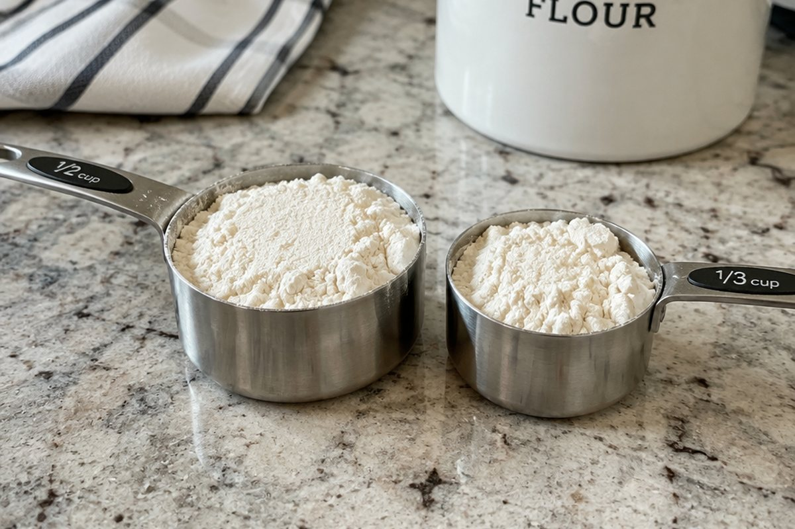

분모가 다른 분수는 어떻게 더할까?

피자 1/2판과 1/3판을 합치면 얼마일까요? 조각 크기가 다르면 바로 더할 수 없어요. 조각 크기를 똑같이 맞추는 방법을 알아봐요.
크기가 같은 분수와 약분
분모와 분자에 0이 아닌 같은 수를 곱하거나 같은 수로 나누면 크기가 같은 분수가 돼요. 1/2 = 2/4 = 3/6이에요.
분모와 분자를 공약수로 나누어 간단하게 만드는 것을 약분이라고 해요. 6/8을 2로 약분하면 3/4이에요. 더 이상 약분할 수 없는 분수를 기약분수라고 해요.
6/8 = 3/4 (분모와 분자를 2로 나눔)
통분: 분모를 같게 만들기
분모가 다른 분수의 분모를 같게 만드는 것을 통분이라고 해요. 이때 같게 만든 분모를 공통분모라고 해요.
공통분모는 두 분모의 최소공배수를 쓰면 수가 작아서 계산이 편해요. 1/2과 1/3은 최소공배수 6을 공통분모로 해서 3/6과 2/6로 통분해요.
1/2 = 3/6, 1/3 = 2/6
이렇게 풀어요: 진분수의 덧셈과 뺄셈
1/2 + 1/3: ① 통분하면 3/6 + 2/6. ② 분모는 그대로 두고 분자끼리 더하면 5/6예요.
3/4 − 1/6: ① 4와 6의 최소공배수 12로 통분하면 9/12 − 2/12. ② 분자끼리 빼면 7/12이에요. 답이 약분되면 기약분수로 나타내요.
1/2 + 1/3 = 3/6 + 2/6 = 5/6, 3/4 − 1/6 = 9/12 − 2/12 = 7/12
이렇게 풀어요: 대분수의 덧셈과 뺄셈
2와 1/3 + 1과 3/4: 자연수끼리 2 + 1 = 3, 분수끼리 4/12 + 9/12 = 13/12 = 1과 1/12. 합치면 4와 1/12이에요.
3과 1/5 − 1과 1/2: 분수끼리 2/10 − 5/10는 뺄 수 없으니 자연수 1을 10/10으로 바꿔 2와 12/10 − 1과 5/10 = 1과 7/10이에요. 대분수를 가분수로 바꿔 계산해도 돼요.
2와 1/3 + 1과 3/4 = 4와 1/12, 3과 1/5 − 1과 1/2 = 1과 7/10
핵심 낱말
- 약분
- 분모와 분자를 공약수로 나누어 간단히 하는 것
- 기약분수
- 더 이상 약분할 수 없는 분수
- 통분
- 분모가 다른 분수의 분모를 같게 만드는 것
- 공통분모
- 통분하여 같게 만든 분모
한 줄 정리
- 분모와 분자에 같은 수를 곱하거나 나누면 크기가 같은 분수가 돼요.
- 분모가 다른 분수는 통분한 뒤 분자끼리 더하거나 빼요.
- 답은 약분해서 기약분수로 나타내요.
학교 교육과정 연결
- [6수01-06] 크기가 같은 분수를 만드는 방법을 이해하고, 분수를 약분, 통분할 수 있다.
- [6수01-08] 분모가 다른 분수의 덧셈과 뺄셈의 계산 원리를 탐구하고 그 계산을 할 수 있다.